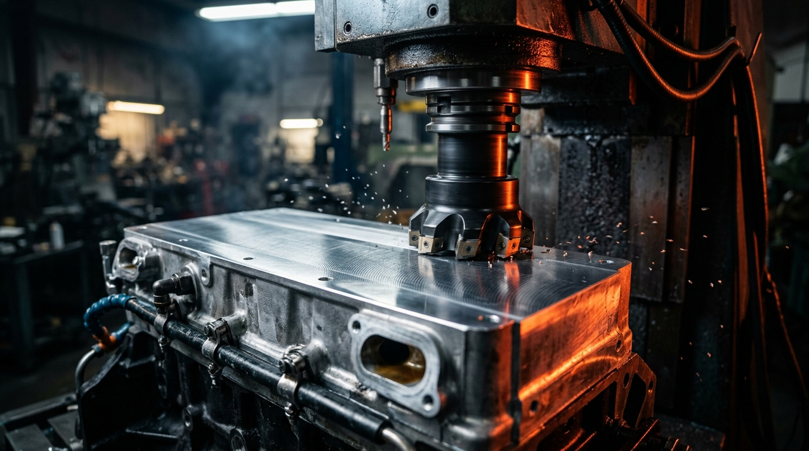

MEDIDA ORIGINAL STDRecuperação de Altura
Enchimento técnico em alumínio e plaina diamantada CNC para devolver a altura original de fábrica (STD) em cabeçotes baixos de medida.
- Preserva a taxa de compressão original
- Elimina grilado (pré-ignição) e aquecimento
- Acabamento espelhado para qualquer junta